Photo credits
Until the real photos of the units are added, the app shows these sample photographs from Wikimedia Commons. They are not photos of Saraza's Apartment.
| Photo | Used for | Photographer | Licence | Source |
|---|---|---|---|---|
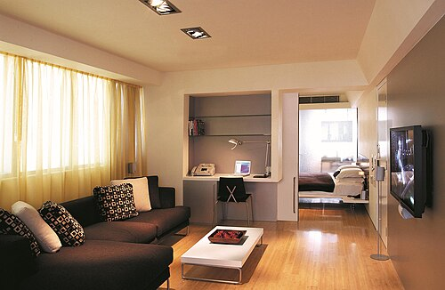 | Studio: living and sleeping area | Home2home | Public domain | Wikimedia Commons |
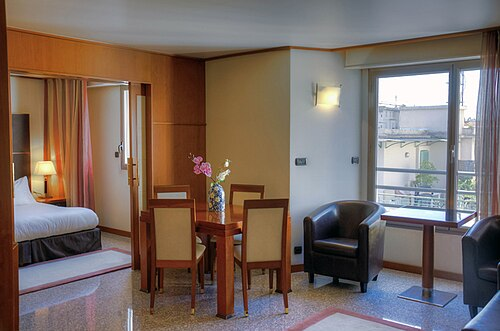 | Studio: bed and dining corner | Paikan06 | CC0 | Wikimedia Commons |
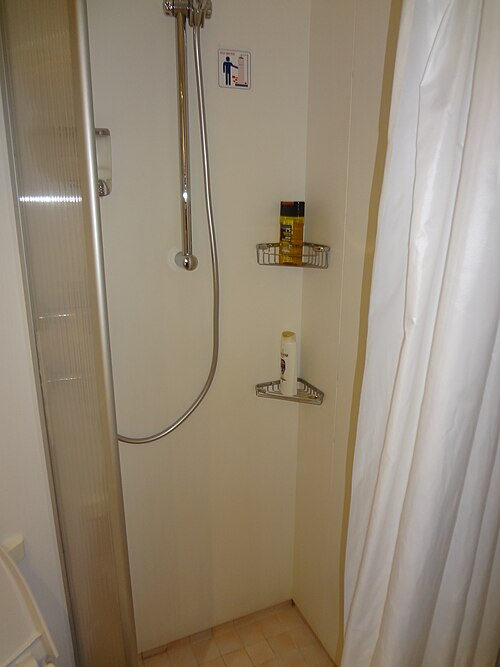 | Studio: shower | Dr Salvus | CC BY-SA 4.0 | Wikimedia Commons |
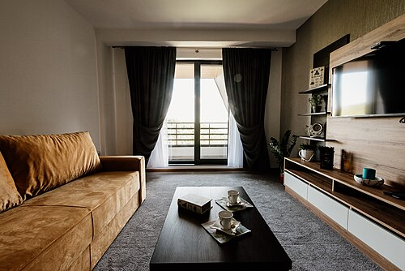 | 1-Bedroom: living room | Shixart1985 | CC BY 2.0 | Wikimedia Commons |
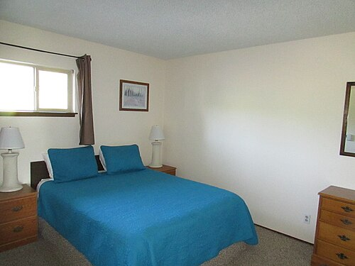 | 1-Bedroom: bedroom | Chris Light | CC BY-SA 4.0 | Wikimedia Commons |
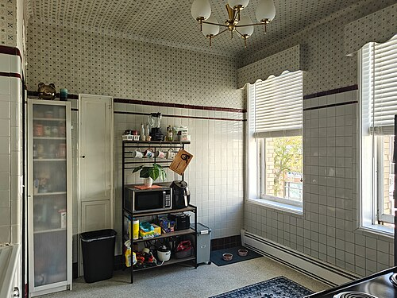 | 1-Bedroom: kitchen | Chevsapher | CC0 | Wikimedia Commons |
 | 1-Bedroom: bathroom | KPNO/NOIRLab/NSF/AURA/P. Delligati | CC BY 4.0 | Wikimedia Commons |
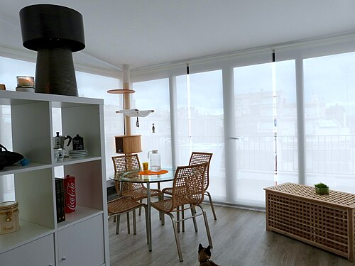 | 2-Bedroom: living and dining | Lo | CC0 | Wikimedia Commons |
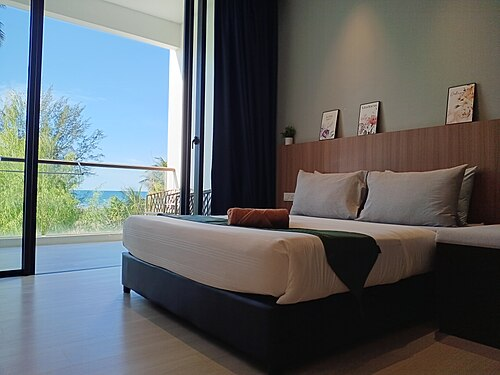 | 2-Bedroom: main bedroom | Cerevisae | CC BY-SA 4.0 | Wikimedia Commons |
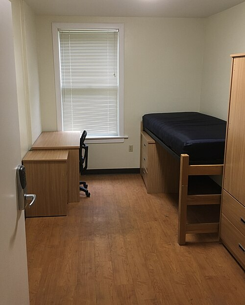 | 2-Bedroom: second bedroom | Packer1028 | CC0 | Wikimedia Commons |
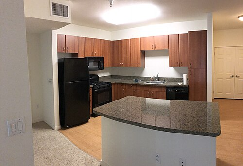 | 2-Bedroom: kitchen | F ASTILY | CC BY-SA 4.0 | Wikimedia Commons |
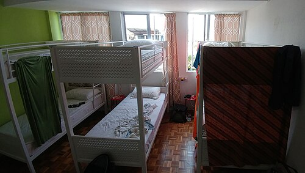 | Bedspace: shared room | Sgroey | CC BY 4.0 | Wikimedia Commons |
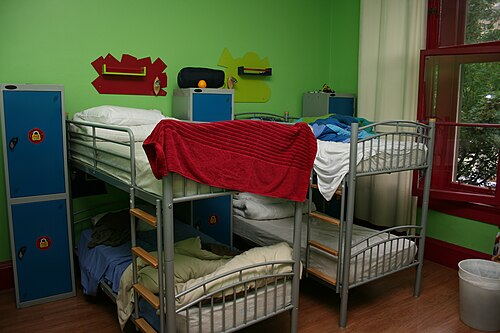 | Bedspace: bunk beds | Aigars Mahinovs from Riga, Latvia | CC BY 2.0 | Wikimedia Commons |
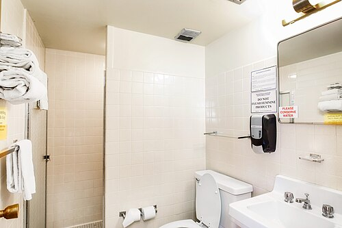 | Bedspace: shared bathroom | KPNO/NOIRLab/NSF/AURA/P. Delligati | CC BY 4.0 | Wikimedia Commons |
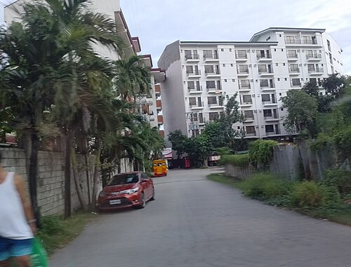 | Jose St. Building (sample) | PaulGorduiz106 | CC BY-SA 4.0 | Wikimedia Commons |
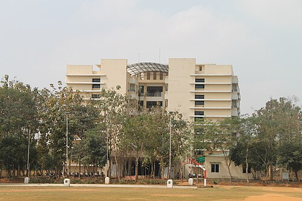 | Jacinto St. Building (sample) | Joris Roovers | CC0 | Wikimedia Commons |